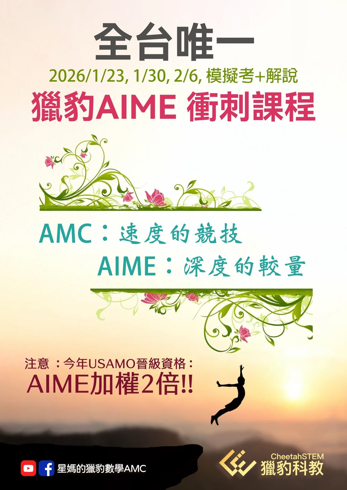

AIME美國數學邀請賽～頂尖高手的競技場
美國影響最大 、最權威的中學生數學競賽是由MAA （美國數學協會）舉辦的AMC（美國數學競賽系列 ，其中AMC部分可分為AMC8、10、12三種 （數字為報名者年級上限 ） 。
每年全球報名參加AMC競賽的學生有好幾十萬人！三個賽事台灣每年報名人次也超過2萬！
AMC12與AIME分數相加達標者可以參賽USAMO(United States of America Mathematical Olympiad)
每年全美超過3000名學生被邀請參加AIME ，其中大約270人可晉級USAMO。
USAMO考試中取得優異成績的前60名會被邀請進入每年夏天由MAA主辦的免費數學夏令營（MOSP），後續選六名國手代表美國參加國際中學生的最⾼賽事IMO (International Mathematical Olympiad) 。
AMC的優勝者是美國頂尖的 數學人才庫，其成績是美國頂尖大學STEM科系入學者在數學科學習成就的重要參考。
以前像一些頂尖大學 （MIT、Caltech、CMU…） 甚至還在申請書裡面專門有設一欄讓申請者填入AMC與AIME的分數。
史丹佛、麻省理工等名校會向AMC主辦單位索取參賽名單，成績優異者會成為各大學爭取入學的對象。
特別是在AIME和USAMO表現卓越的學生可能會接獲這些名校直接聯繫。
USAMO與USAJMO參賽資格說明:
1.僅限目前就讀於美國或加拿大之合格學校或在家自學（Homeschool）的學生，才可具備 USAMO 與 USAJMO 的參賽資格。
2.AIME I 與 AIME II 成績公佈後，MAA AMC 計畫將依據統一訂定之入選指數（Index），決定可參加 USAMO 或 USAJMO 的學生名單。每年約選出 500 名學生參與這兩項競賽。
3.入選指數一經公佈後，將不再更動。
4.USAMO 與 USAJMO 之入選指數計算方式如下：
（ⅰ）USAMO入選指數
＝AMC12成績＋20 × AIME成績(答對題數）
（ⅱ）USAJMO入選指數
＝AMC10成績＋20 × AIME 成績
若學生的成績同時符合USAMO與USAJMO之入選標準，將優先受邀參加 USAMO。
5.MAA AMC 辦公室並保留權利，得因國際數學奧林匹亞（IMO）及歐洲女子數學奧林匹亞（EGMO）代表隊選拔需要，另行邀請特定學生參與競賽。
🔺應家長要求
獵豹2026AIME 考前衝刺
誠聰老師授課
1/23(五) 6:30-9:30
1/30(五) 6:30-9:30
2/6(五) 6:30-9:30
一次模擬考＋錄播講解
共3直播課+1錄播課
定價10000
1.首次報名請填
2. 獵豹2026AIME衝刺課報名表單
